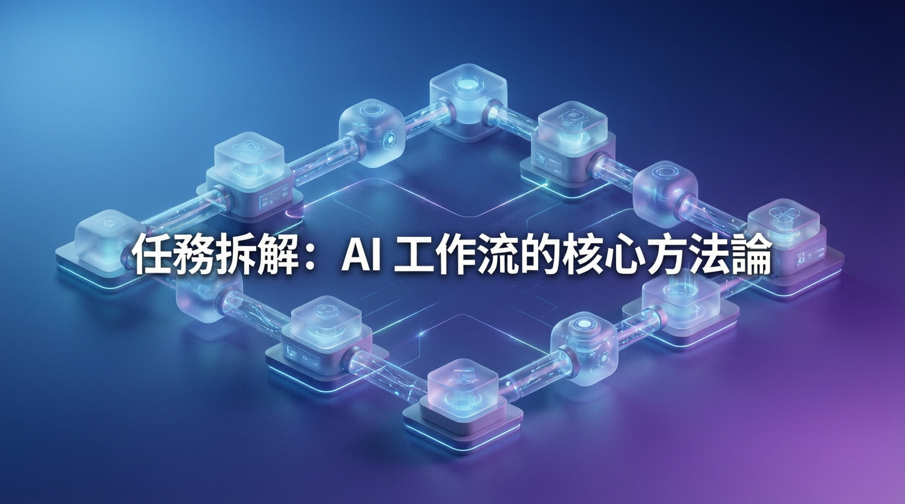

單體代理模式困境與模組化工作流解決方案

AI 工作流建構的核心瓶頸不在於模型算力，而在於「任務拆解」的系統化方法。專家指出，企業若要將生成式 AI 落地為生產級應用，必須將龐雜業務轉化為多節點協作的模組化產線，並引入明確的指令標註與人工覆核機制。
過去企業部署 AI 時，慣於將完整業務目標整包輸入單一模型。此種「單體代理」模式雖然快速，卻因任務邊界模糊、執行邏輯黑箱化，導致錯誤溯源困難，難以通過生產環境測試。當業務複雜度提升時，模型輸出的不可預測性急劇增加。
模型上下文協定（MCP）已成為跨平台串接外部工具的核心開放標準，獲各大科技巨頭支援。類似 USB 介面的發明簡化了設備連接，MCP 正為 AI 工具生態系統建立統一規範。
將複雜流程拆分為獨立節點，單一任務轉化為多專項技能協作的微型產線。
引入 MUST/SHOULD/MAY 標註，明確指令強制性，避免上下文缺失導致邏輯偏移。
敏捷迴圈配合人工檢視，數週期後準確度趨於穩定，適用於默會知識場景。
模型上下文協定成為跨平台工具串接核心，簡化 AI 與企業既有系統的整合。
| 維度 | 單體代理模式 | 模組化工作流 | 差異 |
|---|---|---|---|
| 錯誤溯源 | 困難，黑箱化 | 節點級獨立除錯 | 大幅改善 |
| 可觀測性 | 低 | 高，每節點有驗證標準 | +100% |
| 容錯率 | 單點失敗影響全局 | 節點隔離，單一失敗不擴散 | 顯著提升 |
| 可維護性 | 困難 | 模組可獨立更新 | 易於維護 |
| 規模擴展 | 受限於單一模型能力 | 可並聯多個專業節點 | 支援擴展 |
「將分而治之原則匯入 AI 架構，是破解單體代理困境的關鍵。」
— AI 工作流建構專家模組化設計已成為 AI 工程產業的共識方向。隨著 MCP 等開放標準持續成熟，企業將能更快速地將 AI 能力整合至既有系統。建議企業優先挑選高頻重複業務進行驗證，透過漸進式迭代穩步建構兼具彈性與生產級穩定度的智慧工作生態系。